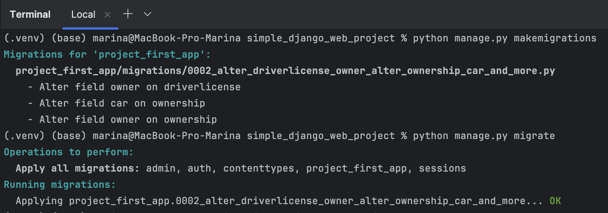
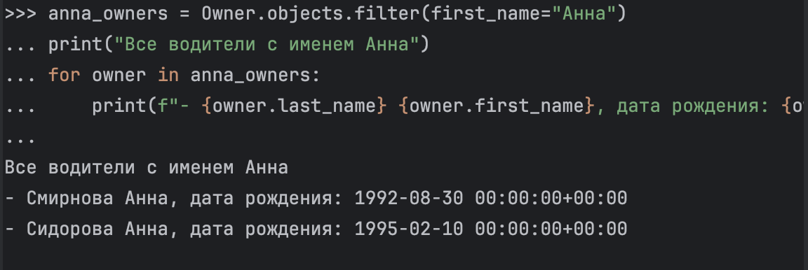
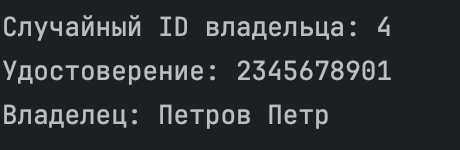
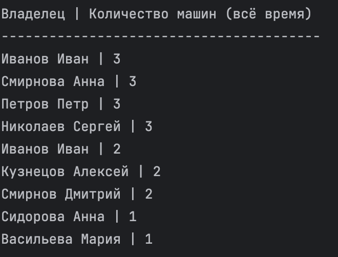
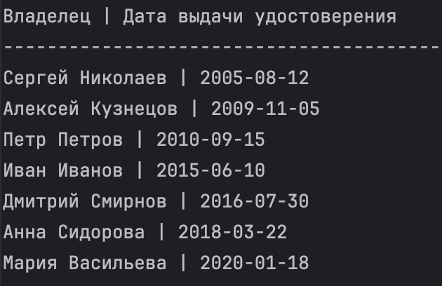

Практическая работа 3.1
Django Web framework. Запросы и их выполнение.
Автор: Машковцева Марина
Практическое задание 1
Напишите запрос на создание 6-7 новых автовладельцев и 5-6 автомобилей, каждому автовладельцу назначьте удостоверение и от 1 до 3 автомобилей. Задание можете выполнить либо в интерактивном режиме интерпретатора, либо в отдельном python-файле. Результатом должны стать запросы и отображение созданных объектов.
Выполнение:
- Сначала я открыла Python Console и импортировала классы моделей приложения:

-
Затем создала объекты, а именно 7 владельцев, 6 авто, 7 прав для каждого водителя. Выглядит это так:
 Предупреждение появляется, потому что я не вводила время, а ограничилась только датой. На работу это никак не повлияло кроме такого предупреждения.
Полный список всех созданных объектов:
Предупреждение появляется, потому что я не вводила время, а ограничилась только датой. На работу это никак не повлияло кроме такого предупреждения.
Полный список всех созданных объектов:Владельцы:
owner1 = Owner.objects.create(
last_name="Иванов",
first_name="Иван",
birth_date="1990-05-15"
)
owner2 = Owner.objects.create(
last_name="Петров",
first_name="Петр",
birth_date="1985-08-22"
)
owner3 = Owner.objects.create(
last_name="Сидорова",
first_name="Анна",
birth_date="1995-02-10"
)
owner4 = Owner.objects.create(
last_name="Кузнецов",
first_name="Алексей",
birth_date="1988-11-30"
)
owner5 = Owner.objects.create(
last_name="Смирнов",
first_name="Дмитрий",
birth_date="1992-07-18"
)
owner6 = Owner.objects.create(
last_name="Васильева",
first_name="Мария",
birth_date="1998-03-25"
)
owner7 = Owner.objects.create(
last_name="Николаев",
first_name="Сергей",
birth_date="1980-12-05"
)
Автомобили:
car1 = Car.objects.create(
license_plate="А123БВ777",
brand="Toyota",
model="Camry",
color="Черный"
)
car2 = Car.objects.create(
license_plate="В456ГД123",
brand="BMW",
model="X5",
color="Белый"
)
car3 = Car.objects.create(
license_plate="Е789ЖК456",
brand="Lada",
model="Vesta",
color="Серый"
)
car4 = Car.objects.create(
license_plate="М012НО789",
brand="Kia",
model="Rio",
color="Красный"
)
car5 = Car.objects.create(
license_plate="П345РС012",
brand="Hyundai",
model="Solaris",
color="Синий"
)
car6 = Car.objects.create(
license_plate="Т678УФ345",
brand="Volkswagen",
model="Polo",
color="Зеленый"
)
И водительское удостоверение для каждого водителя:
DriverLicense.objects.create(
owner=owner1,
license_number="1234567890",
license_type="B",
issue_date="2015-06-10"
)
DriverLicense.objects.create(
owner=owner2,
license_number="2345678901",
license_type="BC",
issue_date="2010-09-15"
)
DriverLicense.objects.create(
owner=owner3,
license_number="3456789012",
license_type="B",
issue_date="2018-03-22"
)
DriverLicense.objects.create(
owner=owner4,
license_number="4567890123",
license_type="BCD",
issue_date="2009-11-05"
)
DriverLicense.objects.create(
owner=owner5,
license_number="5678901234",
license_type="B",
issue_date="2016-07-30"
)
DriverLicense.objects.create(
owner=owner6,
license_number="6789012345",
license_type="B",
issue_date="2020-01-18"
)
DriverLicense.objects.create(
owner=owner7,
license_number="7890123456",
license_type="BCDE",
issue_date="2005-08-12"
)
- Далее связываю автомобили с владельцами через модель Ownership
# Владелец 1 получает 2 автомобиля
Ownership.objects.create(
owner=owner1,
car=car1,
start_date="2020-01-15",
end_date="2023-12-31"
)
Ownership.objects.create(
owner=owner1,
car=car2,
start_date="2022-03-10",
end_date=None # еще владеет
)
# Владелец 2 получает 3 автомобиля
Ownership.objects.create(
owner=owner2,
car=car2, # BMW X5 перешел от owner1 к owner2
start_date="2024-01-01",
end_date=None
)
Ownership.objects.create(
owner=owner2,
car=car3,
start_date="2019-08-20",
end_date=None
)
Ownership.objects.create(
owner=owner2,
car=car4,
start_date="2021-05-14",
end_date=None
)
# Владелец 3 получает 1 автомобиль
Ownership.objects.create(
owner=owner3,
car=car5,
start_date="2023-02-28",
end_date=None
)
# Владелец 4 получает 2 автомобиля
Ownership.objects.create(
owner=owner4,
car=car1, # Toyota Camry перешла от owner1
start_date="2024-01-01",
end_date=None
)
Ownership.objects.create(
owner=owner4,
car=car6,
start_date="2022-11-11",
end_date=None
)
# Владелец 5 получает 2 автомобиля
Ownership.objects.create(
owner=owner5,
car=car4, # Kia Rio перешла от owner2
start_date="2023-06-01",
end_date="2024-05-31"
)
Ownership.objects.create(
owner=owner5,
car=car3, # Lada Vesta перешла от owner2
start_date="2024-06-01",
end_date=None
)
# Владелец 6 получает 1 автомобиль
Ownership.objects.create(
owner=owner6,
car=car5, # Hyundai Solaris перешел от owner3
start_date="2024-03-15",
end_date=None
)
# Владелец 7 получает 3 автомобиля
Ownership.objects.create(
owner=owner7,
car=car1, # Toyota Camry перешла от owner4
start_date="2024-02-01",
end_date=None
)
Ownership.objects.create(
owner=owner7,
car=car2, # BMW X5 перешел от owner2
start_date="2023-12-01",
end_date=None
)
Ownership.objects.create(
owner=owner7,
car=car6, # Volkswagen Polo перешел от owner4
start_date="2024-01-20",
end_date=None
)
- После проверяю все получившиеся данные:
Владельцев создано: 9
Автомобилей создано: 10
Удостоверений создано: 7
Записей о владении создано: 20
=== Все владельцы и их автомобили ===
Владелец: Иванов Иван
Автомобили:
- Toyota Camry (A123BC)
Период владения: 2020-01-01 00:00:00+00:00 - 2021-01-01 00:00:00+00:00
- BMW X5 (B456CD)
Период владения: 2021-01-02 00:00:00+00:00 - 2022-05-10 00:00:00+00:00
- Kia Rio (C789EF)
Период владения: 2022-05-11 00:00:00+00:00 - 2023-10-15 00:00:00+00:00
Владелец: Смирнова Анна
Автомобили:
- Honda Civic (D111GH)
Период владения: 2020-03-01 00:00:00+00:00 - 2021-05-01 00:00:00+00:00
- Toyota Camry (A123BC)
Период владения: 2021-05-02 00:00:00+00:00 - 2022-06-15 00:00:00+00:00
- BMW X5 (B456CD)
Период владения: 2022-06-16 00:00:00+00:00 - 2023-12-31 00:00:00+00:00
Владелец: Иванов Иван
Автомобили:
- Toyota Camry (А123БВ777)
Период владения: 2020-01-15 00:00:00+00:00 - 2023-12-31 00:00:00+00:00
- BMW X5 (В456ГД123)
Период владения: 2022-03-10 00:00:00+00:00 - настоящее время
Владелец: Петров Петр
Автомобили:
- BMW X5 (В456ГД123)
Период владения: 2024-01-01 00:00:00+00:00 - настоящее время
- Lada Vesta (Е789ЖК456)
Период владения: 2019-08-20 00:00:00+00:00 - настоящее время
- Kia Rio (М012НО789)
Период владения: 2021-05-14 00:00:00+00:00 - настоящее время
Владелец: Сидорова Анна
Автомобили:
- Hyundai Solaris (П345РС012)
Период владения: 2023-02-28 00:00:00+00:00 - настоящее время
Владелец: Кузнецов Алексей
Автомобили:
- Toyota Camry (А123БВ777)
Период владения: 2024-01-01 00:00:00+00:00 - настоящее время
- Volkswagen Polo (Т678УФ345)
Период владения: 2022-11-11 00:00:00+00:00 - настоящее время
Владелец: Смирнов Дмитрий
Автомобили:
- Kia Rio (М012НО789)
Период владения: 2023-06-01 00:00:00+00:00 - 2024-05-31 00:00:00+00:00
- Lada Vesta (Е789ЖК456)
Период владения: 2024-06-01 00:00:00+00:00 - настоящее время
Владелец: Васильева Мария
Автомобили:
- Hyundai Solaris (П345РС012)
Период владения: 2024-03-15 00:00:00+00:00 - настоящее время
Владелец: Николаев Сергей
Автомобили:
- Toyota Camry (А123БВ777)
Период владения: 2024-02-01 00:00:00+00:00 - настоящее время
- BMW X5 (В456ГД123)
Период владения: 2023-12-01 00:00:00+00:00 - настоящее время
- Volkswagen Polo (Т678УФ345)
Период владения: 2024-01-20 00:00:00+00:00 - настоящее время
=== Все автомобили и их владельцы ===
Автомобиль: Toyota Camry (A123BC)
Владельцы (в хронологическом порядке):
- Смирнова Анна
Период владения: 2021-05-02 00:00:00+00:00 - 2022-06-15 00:00:00+00:00
- Иванов Иван
Период владения: 2020-01-01 00:00:00+00:00 - 2021-01-01 00:00:00+00:00
Автомобиль: BMW X5 (B456CD)
Владельцы (в хронологическом порядке):
- Смирнова Анна
Период владения: 2022-06-16 00:00:00+00:00 - 2023-12-31 00:00:00+00:00
- Иванов Иван
Период владения: 2021-01-02 00:00:00+00:00 - 2022-05-10 00:00:00+00:00
Автомобиль: Kia Rio (C789EF)
Владельцы (в хронологическом порядке):
- Иванов Иван
Период владения: 2022-05-11 00:00:00+00:00 - 2023-10-15 00:00:00+00:00
Автомобиль: Honda Civic (D111GH)
Владельцы (в хронологическом порядке):
- Смирнова Анна
Период владения: 2020-03-01 00:00:00+00:00 - 2021-05-01 00:00:00+00:00
Автомобиль: Toyota Camry (А123БВ777)
Владельцы (в хронологическом порядке):
- Николаев Сергей
Период владения: 2024-02-01 00:00:00+00:00 - настоящее время
- Кузнецов Алексей
Период владения: 2024-01-01 00:00:00+00:00 - настоящее время
- Иванов Иван
Период владения: 2020-01-15 00:00:00+00:00 - 2023-12-31 00:00:00+00:00
Автомобиль: BMW X5 (В456ГД123)
Владельцы (в хронологическом порядке):
- Петров Петр
Период владения: 2024-01-01 00:00:00+00:00 - настоящее время
- Николаев Сергей
Период владения: 2023-12-01 00:00:00+00:00 - настоящее время
- Иванов Иван
Период владения: 2022-03-10 00:00:00+00:00 - настоящее время
Автомобиль: Lada Vesta (Е789ЖК456)
Владельцы (в хронологическом порядке):
- Смирнов Дмитрий
Период владения: 2024-06-01 00:00:00+00:00 - настоящее время
- Петров Петр
Период владения: 2019-08-20 00:00:00+00:00 - настоящее время
Автомобиль: Kia Rio (М012НО789)
Владельцы (в хронологическом порядке):
- Смирнов Дмитрий
Период владения: 2023-06-01 00:00:00+00:00 - 2024-05-31 00:00:00+00:00
- Петров Петр
Период владения: 2021-05-14 00:00:00+00:00 - настоящее время
Автомобиль: Hyundai Solaris (П345РС012)
Владельцы (в хронологическом порядке):
- Васильева Мария
Период владения: 2024-03-15 00:00:00+00:00 - настоящее время
- Сидорова Анна
Период владения: 2023-02-28 00:00:00+00:00 - настоящее время
Автомобиль: Volkswagen Polo (Т678УФ345)
Владельцы (в хронологическом порядке):
- Николаев Сергей
Период владения: 2024-01-20 00:00:00+00:00 - настоящее время
- Кузнецов Алексей
Период владения: 2022-11-11 00:00:00+00:00 - настоящее время
=== Водительские удостоверения ===
Владелец: Иванов Иван
Номер удостоверения: 1234567890
Категория: B
Дата выдачи: 2015-06-10 00:00:00+00:00
Владелец: Петров Петр
Номер удостоверения: 2345678901
Категория: BC
Дата выдачи: 2010-09-15 00:00:00+00:00
Владелец: Сидорова Анна
Номер удостоверения: 3456789012
Категория: B
Дата выдачи: 2018-03-22 00:00:00+00:00
Владелец: Кузнецов Алексей
Номер удостоверения: 4567890123
Категория: BCD
Дата выдачи: 2009-11-05 00:00:00+00:00
Владелец: Смирнов Дмитрий
Номер удостоверения: 5678901234
Категория: B
Дата выдачи: 2016-07-30 00:00:00+00:00
Владелец: Васильева Мария
Номер удостоверения: 6789012345
Категория: B
Дата выдачи: 2020-01-18 00:00:00+00:00
Владелец: Николаев Сергей
Номер удостоверения: 7890123456
Категория: BCDE
Дата выдачи: 2005-08-12 00:00:00+00:00
Практическое задание 2
По созданным в пр.1 данным написать следующие запросы на фильтрацию:
- Где это необходимо, добавьте related_name к полям модели
- Выведете все машины марки “Toyota” (или любой другой марки, которая у вас есть)
- Найти всех водителей с именем “Олег” (или любым другим именем на ваше усмотрение)
- Взяв любого случайного владельца получить его id, и по этому id получить экземпляр удостоверения в виде объекта модели (можно в 2 запроса)
- Вывести всех владельцев красных машин (или любого другого цвета, который у вас присутствует)
- Найти всех владельцев, чей год владения машиной начинается с 2010 (или любой другой год, который присутствует у вас в базе)
Выполнение:
1. Сначала я добавила related_name в модели Ownership, DriverLicense
2. Затем применила миграции (python manage.py makemigrations, python manage.py migrate):

3. И теперь снова можно переходить в Python Console и выполнять запросы. Далее я буду оформлять их дополнительными выводами через print, чтобы было точно понятно что конкретно выводит данный запрос
4. Вывести все машины марки "Toyota":
toyota_cars = Car.objects.filter(brand="Toyota")
print(Все машины Toyota")
for car in toyota_cars:
print(f"- {car.brand} {car.model} ({car.license_plate}), цвет: {car.color}")

- Найти всех водителей с именем "Анна":
anna_owners = Owner.objects.filter(first_name="Анна")
print("Все водители с именем Анна")
for owner in anna_owners:
print(f"- {owner.last_name} {owner.first_name}, дата рождения: {owner.birth_date}")

- Взять случайного владельца и получить его удостоверение:
import random
# Первый запрос - получаем ID случайного владельца
owner_ids = Owner.objects.values_list('id', flat=True)
if owner_ids:
random_id = random.choice(owner_ids)
print(f"Случайный ID владельца: {random_id}")
# Второй запрос - получаем удостоверение по этому ID
try:
license_by_id = DriverLicense.objects.get(owner_id=random_id)
print(f"Удостоверение: {license_by_id.license_number}")
print(f"Владелец: {license_by_id.owner.last_name} {license_by_id.owner.first_name}")
except DriverLicense.DoesNotExist:
print(f"У владельца с ID {random_id} нет удостоверения")

- Вывести всех владельцев красных машин
print("Владельцы красных машин")
# Сначала находим все красные машины
red_cars = Car.objects.filter(color="Красный")
print(f"Найдено красных машин: {red_cars.count()}")
# Для каждой красной машины находим владельцев через Ownership
for car in red_cars:
print(f"\nМашина: {car.brand} {car.model}")
# Получаем все записи о владении этой машиной
ownerships = car.ownerships.all() # используем related_name
if ownerships.exists():
print("Владельцы:")
for ownership in ownerships:
print(f"- {ownership.owner.last_name} {ownership.owner.first_name} (владел с {ownership.start_date} по {ownership.end_date or 'настоящее время'})")
else:
print("Нет записей о владении")

- Найти всех владельцев, чей год владения машиной начинается с 2020
owners_since_2020 = Owner.objects.filter(
ownerships__start_date__year__gte=2020
).distinct()
print("Владельцы, которые владели машинами с 2020 года:")
for owner in owners_since_2020:
print(f"- {owner.last_name} {owner.first_name}")

Практическое задание 3
Необходимо реализовать следующие запросы c применением описанных методов: - Вывод даты выдачи самого старшего водительского удостоверения - Укажите самую позднюю дату владения машиной, имеющую какую-то из существующих моделей в вашей базе - Выведите количество машин для каждого водителя - Подсчитайте количество машин каждой марки - Отсортируйте всех автовладельцев по дате выдачи удостоверения
Выполнение: 1. Самая старая дата выдачи водительского удостоверения:
oldest_license_date = DriverLicense.objects.aggregate(
oldest_date=Min('issue_date')
)
print(f"Самая старая дата выдачи: {oldest_license_date['oldest_date']}")

- Самая поздняя дата владения машиной для каждой модели
latest_ownership_by_model = Ownership.objects.values(
'car__model'
).annotate(
latest_date=Max('start_date')
).order_by('car__model')
print("Модель | Самая поздняя дата владения")
print("-" * 40)
for item in latest_ownership_by_model:
print(f"{item['car__model']} | {item['latest_date'].date()}")

- Количество машин для каждого водителя
owners_with_car_count = Owner.objects.annotate(
car_count=Count('ownerships')
).order_by('-car_count')
print("Владелец | Количество машин (всё время)")
print("-" * 40)
for owner in owners_with_car_count:
print(f"{owner.last_name} {owner.first_name} | {owner.car_count}")

- Количество машин каждой марки
cars_by_brand = Car.objects.values('brand').annotate(
count=Count('id')
).order_by('-count')
print("Марка | Количество машин")
print("-" * 40)
for item in cars_by_brand:
print(f"{item['brand']} | {item['count']}")

- Сортировка владельцев по дате выдачи удостоверения
owners_sorted_by_license = Owner.objects.filter(
licenses__isnull=False
).annotate(
license_date=Min('licenses__issue_date')
).order_by('license_date').distinct()
print("Владелец | Дата выдачи удостоверения")
print("-" * 40)
for owner in owners_sorted_by_license:
license = owner.licenses.order_by('issue_date').first()
print(f"{owner.first_name} {owner.last_name} | {license.issue_date.date()}")
